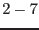

XMM-Newton Science Analysis System
edetect_stack (edetect_stack-0.1.1) [xmmsas_20170112_1337-16.0.0]
General structure
General structure of edetect_stack, starting from event lists,
attitude information and ODF summary files:
- sort input files and determine the number of different pointings
- set up the common coordinate system: choose reference coordinates
and image size from the pointing coordinates and the position angles of
the input files (if not explicitly given by the user)
- check whether all imput pointings are overlapping: If the field of
view of an input pointing is not overlapping with any other field by at
least 3arcmin in radius, edetect_stack
exits with an error. If
the full fields of view are overlapping, but a pointing is not
overlapping with the user-chosen area of interest (reference coordinates
& image size), this pointing is ignored, and a warning ist thrown.
- project the input event lists onto the reference coordinate system
- prepare the input files to source detection per pointing
(stages , see below)
- perform stacked source detection on all pointings simultaneously
- create the final source list, which includes information on the
detections in the individual pointings and all-EPIC, and a
summary source list, which includes one all-EPIC row per valid detection.
Each input image is combined with its respective background image, exposure
map, and detection mask. Within a cut-out radius about each tentative
detection, the appropriate PSFs are chosen for all valid images, as
illustrated in Fig. 1, and source
position, counts, and extent are fit simultaneously.
Figure 1:
Combining the PSFs of different instruments and observations
(offset angles) within the source cut-out radius.
|
XMM-Newton SOC/SSC -- 2017-01-12